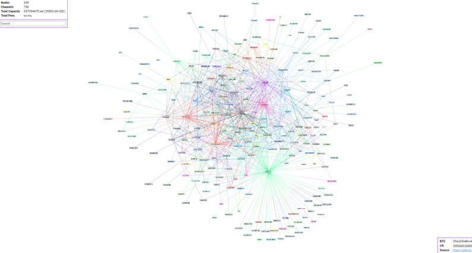

Megoldás Bitcoin bővíthetőségi problémáira II. rész: Lightning Network
A régóta várt Lighning Network lehetővé teszi az azonnali tranzakciókat a Bitcoin hálózaton. A Lightning Network a blokklánc beépített okos szerződés funkcióját használja amely lehetővé teszi, hogy a blokkláncon kívül bonyolítsunk tranzakciókat. Az alapötlet az, hogy nem kell az összes tranzakciót feljegyezni a blokkláncon.
Hogyan működik a Lightning Network?
Képzeljük el, hogy két személy sok utalást végez egymás közt. Ebben az esetben kikerülhetik a tranzakciók feljegyzését a fő láncon és megoldhatják a blokkláncon kívül.
Egyszerűen fogalmazva egy fizetési csatornát nyit egymás között A és B személy és ennek csak a megnyitását jegyzik fel a blokkláncra.
Elöször A és B személy is egy kezdeti Bitcoin összeget helyez el ezen a fizetési csatornán amely az alaptőkéje lesz ennek. Ez a fizetési csatorna megosztásra kerül a Bitcoin hálózaton egy tranzakcióként, és ezután az alaptőke biztosításra kerül a blokkláncon.
Ha ez megtörténik A és B személy bármennyiszer utalhat egymás között ezen a fizetési csatornán keresztül és nyitva maradhat akár az idők végezetéig. A legközelebbi alkalom mikor a blokklánchoz kellene nyúlniuk amikor bezárják a fizetési csatornát.
A fizetési csatornán történő utalások egy mikró főkönyvön van vezetve A és B személy között. Ameddig a fizetési csatorna nyitva van A és B személy közötti tranzakciók azonnaliak, mivel nem kell arra várniuk, hogy az utalásaik bekerüljenek egy blokkba.
Amikor bezárják a fizetési csatornát a tranzakciók végleges állapota feljegyzésre kerül a blokkláncon.
Hogyan működik a Lightning Network több személlyel?
Minden tranzakciónál új fizetési csatornát létrehozni ugyanolyan veszteséges lenne, mint ha minden tranzakciót feljegyeznénk a blokkláncon. Itt jön képbe a Lightning Network hálózata.
A fizetési csatornák összeköthetőek, tehát új tranzakciók keresztül mehetnek már meglévő fizetési csatornán is. Ez azt jelenti, hogy nem csak A és B személy tranzakciói mennek keresztül az általuk létrehozott fizetési csatornákon, hanem C és D személyé is, és még többen is.
Így használva a fizetési csatornákat, egy olyan hálózatot tudunk létrehozni amely segítségével csak ritkán kellene tranzakciókat feljegyezni a blokkláncra.
Tehát ha A és B személy között van egy nyitott fizetési csatorna, és B és C személy között is van nyitva egy fizetési csatorna akkor A személy tud Bitcoin-t küldeni C személynek B személyen át.
Ez úgy működik, hogy A személy szeretne küldeni 2 BTC-t C személynek akkor B személy elküld 2 BTC-t C személynek és A személy visszatéríti B személyt 2 BTC-vel.
Ez az alap ötlet a Lighning Network mögött. Mivel nem minden tranzakciót fognak feljegyezni a blokkláncra, annak sebessége és költségei csökkenni fognak, a Lightning Network pedig villám gyors és rendkívül olcsó.
A Lightning Network használata nem lesz ingyenes, bizonyos mennyiségű tranzakciós díjat fizetni kell a fizetési csatorna tulajdonosainak, de ez nem lesz egy eget rengető összeg.
Végeredménye egy fizetési csatorna hálózat amely hatalmas mennyiségű Bitcoin tranzakciót képes lebonyolítani anélkül, hogy szükségtelenül megterhelné a blokkláncot. Ha a Lightning Network elég nagyra nő akkor rengeteg Bitcoin tranzakció a Lightning Network-n történne és csak a végeredmény tűnne fel a blokkláncon.
Fontos megemlíteni, hogy a Lightning Network csak kísérleti jelleggel működik. Még csak az alfa teszteket végzik. Egyelőre még korai megmondani mikor lesz a hálózat üzemképes a nagyközönség előtt.
Lightning Network statisztikáit megtalálhatod itt.
Lightning Network biztonsága
Lightning Network-nek megnő a biztonsági kockázata. Tranzakció fogadásnál online kell, hogy legyen a fogadó fél. Azáltal, hogy a fogadó fél tárcája mindig online van azt jelenti, hogy a privát kulcsok veszélynek vannak kitéve ha egy biztonsági incidens történik.
Centralizáció
Lightning Network elosztás 2018 Január Forrás: https://lnmainnet.gaben.win/
Bármennyire is nagyszerű találmány a Lightning Network megvannak a hátrányai. Egy teljesen decentralizált rendszer nem valószínű, hogy fenntartható, sokkal valószínűbb, hogy nagy csomópontok fognak kialakulni a rendszerben.
Legnagyobb oka ennek, hogy amikor egy tranzakció végbemegy több csatornán keresztül, a közvetítő csatornáknak elég nagy tőkét kell tárolniuk, hogy fedezni tudják a tranzakciót. Például egy 5 BTC-s tranzakció nem mehet végig bármilyen csatornán, csak azokon ahol legalább 5 BTC van.
Ennek logikus következménye, hogy nagy csomópontok fognak kialakulni. Amikor a két fél kapcsolatban áll az egyik ilyen csomóponttal ők használhatják a Lightning Network-t egymás között. Ez elég lehet néhány decentralizáció fanatikusnak, hogy a Lightning Network ellen legyen.
Ezek a nagy fizetési csomópontok azonban nem fognak hasonlítani a bankokra. Soha nem lesz hozzáférésük a pénzedhez, a tranzakciókat megbízható okos szerződések végzik.
Záró gondolatok
Lighning Network lehetővé teszi, hogy alacsony tranzakciós díjakkal villám gyorsan lehessen Bitcoin-t utalni. Azonban minden valószínűség szerint veszíteni fog a decentralizáltságából. Kíváncsian várjuk, hogyan fog működni a jövőben, fenntartható lesz-e a rendszer?


2018. Január 27.